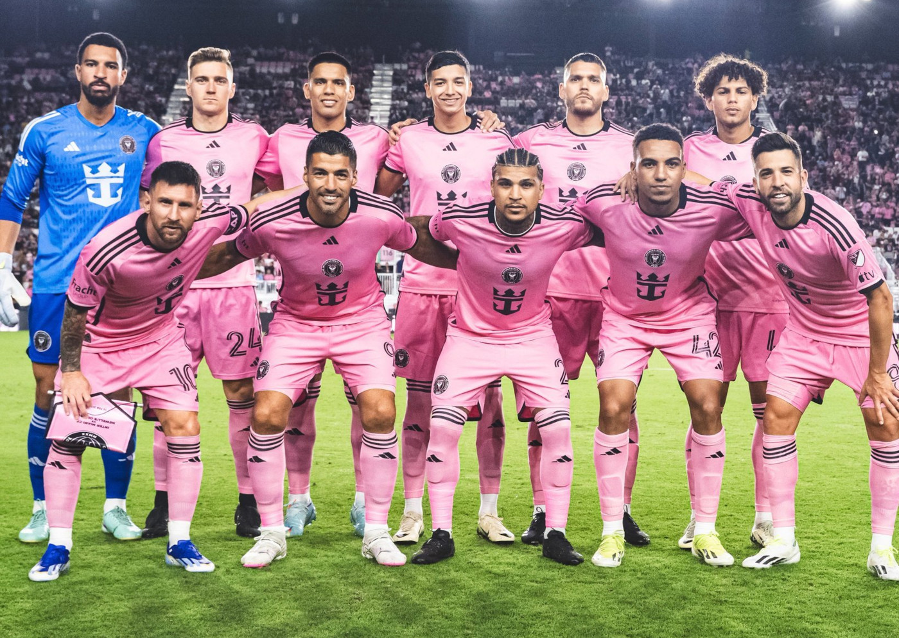
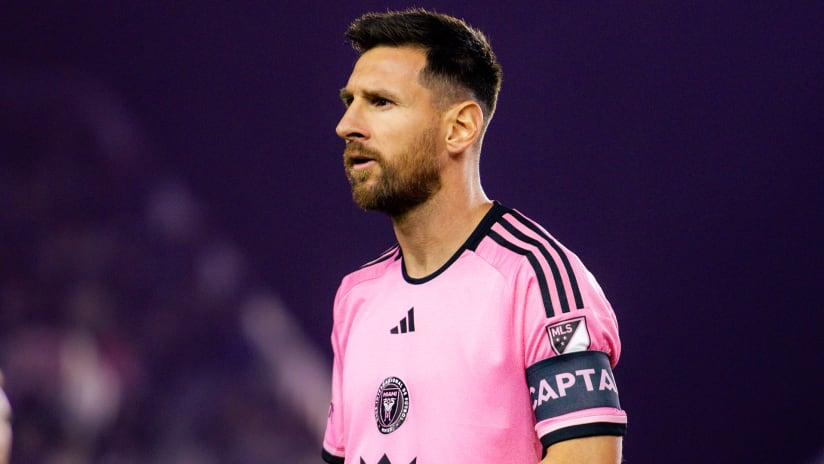

História do Inter Miami CF
O Club Internacional de Fútbol Miami, conhecido como Inter Miami CF ou simplesmente Inter Miami, é um clube profissional de futebol de Fort Lauderdale, Flórida. Fundado em 2018, o clube começou a jogar na Conferência Leste da Major League Soccer (MLS) durante a temporada de 2020. O clube atualmente joga suas partidas como mandante no Chase Stadium, o local do antigo Lockhart Stadium.
Rivalidades
O clube tem uma rivalidade intra-estadual com o Orlando City, atualmente os vizinhos mais próximos do time e o único outro time da Flórida na MLS. O Orlando City ingressou na MLS em 2015, mas teve que esperar até sua sexta temporada para jogar uma primeira partida intra-estadual contra um adversário da MLS após a introdução do Inter Miami como uma franquia de expansão em 2020. Foi nomeado Florida Derby (Dérbi da Flórida) pela página oficial da MLS. O clube também tem uma rivalidade intramunicipal no USL Championship com o clube Miami FC, conhecida como o Miami Clásico.
A chegada de um grande craque
Em 5 de junho de 2023, Lionel Messi, na altura sete vezes vencedor da Bola de Ouro, anunciou sua intenção de ingressar no clube após deixar o , recusando ofertas para jogar no Al-Hilal e no Barcelona. Messi assinou seu contrato de Jogador Designado em 15 de julho de 2023, juntando-se ao time até a temporada de 2025 da MLS.
Messi chegou então para transformar o time mediano de Miami em uma potência do futebol nacional, claramente chamando atenção dos holofotes da mídia internacional.
Então é isso! Espero que você tenha gostado do nosso artigo com essas curiosidades sobre o Inter Miami CF e sua incrível história que está sendo escrita.